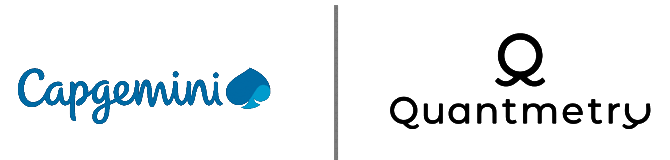
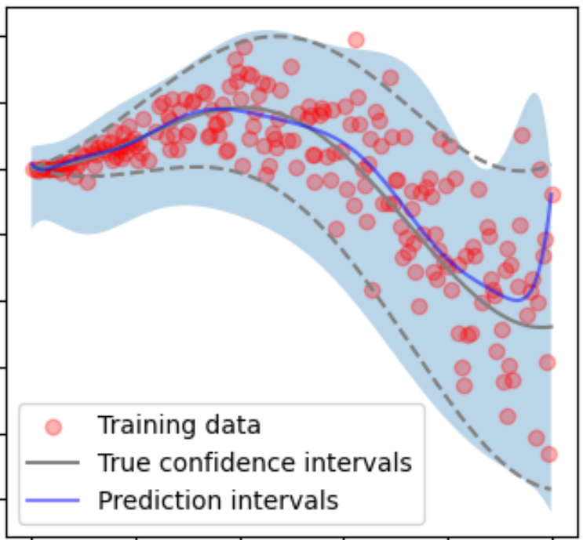
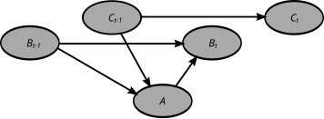
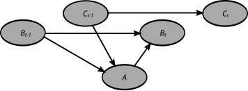

Quantmetry, part of Capgemini
Stage de recherche, Data Science (mai 2025 - novembre 2025)

Prédictions conformes
Statistique
Open-source
Contact Client
Bayesian Networks
Pendant ce stage, j'ai travaillé sur les prédictions conformes adaptatives, en étudiant l'état de l'art et en comparant les méthodes existantes.
C'est une branche des statistiques qui fournit des intervalles de prédiction avec des garanties théoriques de couverture.
Appliqué à des modèles de machine learning ou de deep learning, souvent peu (voire pas) interprétables et explicables, cela permet d'augmenter la confiance accordée aux prédictions.
En effet, si l'on sait que la prédiction se situe entre telle et telle valeur avec 95 % de fiabilité, on peut beaucoup plus sereinement prendre des décisions basées sur ces prédictions.
Utiliser des intervalles de prédiction peut s'avérer indispensable dans de nombreux contextes, où les professionnels ou les utilisateurs manquent souvent de confiance dans les modèles.
J'ai implémenté une méthode de l'état de l'art dans le package open-source scikit-learn-contrib MAPIE.
Cela m'a appris à produire un code de qualité, avec tous les standards liés à un package open-source connu comme scikit-learn.

J'ai aussi fait une mission pour Stellantis. J'ai réalisé une analyse statistique de l'importance des étapes du parcours client, en utilisant des réseaux bayésiens (graphes et algorithme d'Espérance-Maximisation)
et des tests statistiques. J'ai été placé en autonomie sur cette mission, face au client, autant pour produire le code que présenter les résultats.
 
